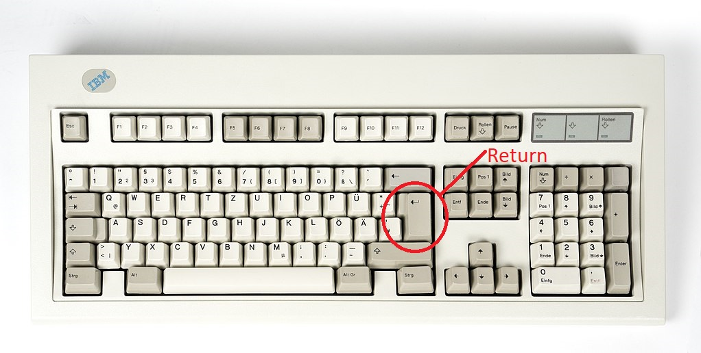
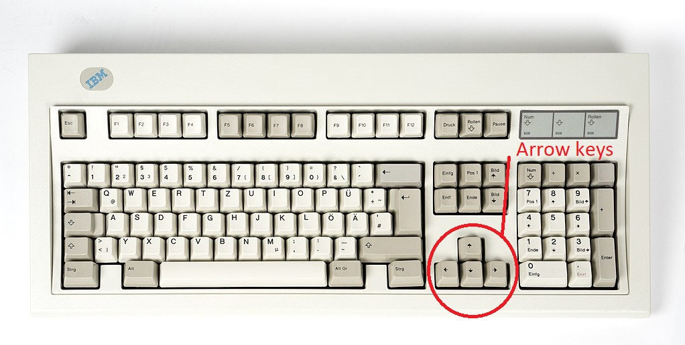

Lai mainītu krāsas ir jāizmanto return, jeb enter poga

Lai pārvietotos ir jāizmanto uz datora klaviatūras esošās bultiņas, jeb arrow key
Oranžais taisnstūris apzīmē šobrīd izvēlēto krāsas taisnstūri

Atpakaļ uz galveno lapu